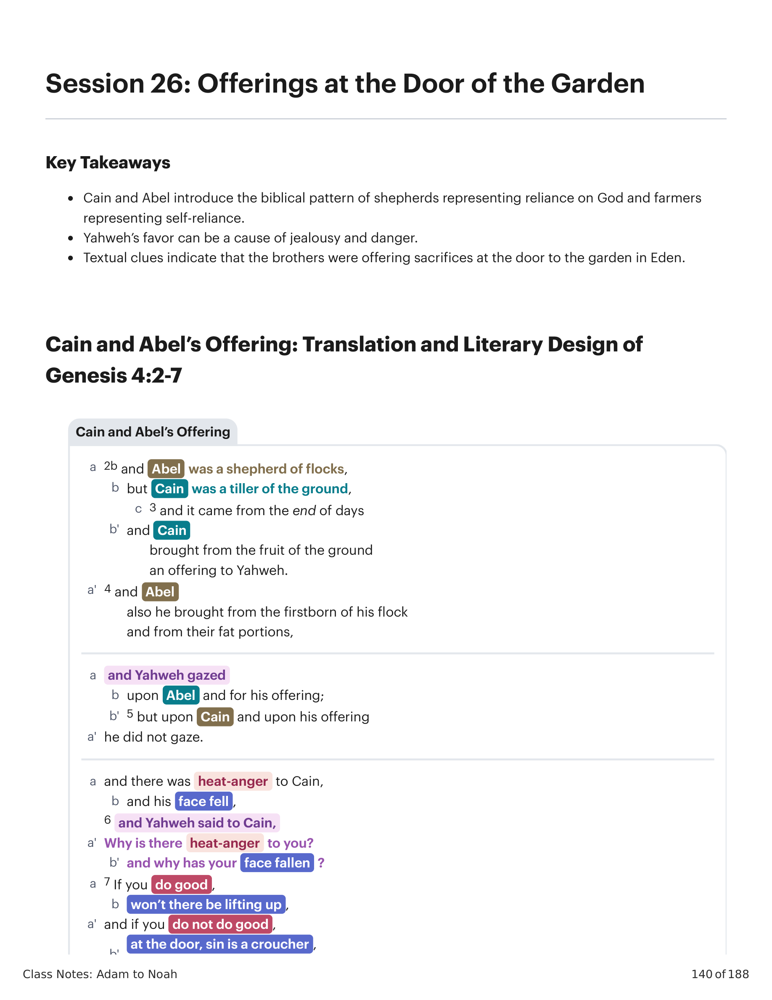
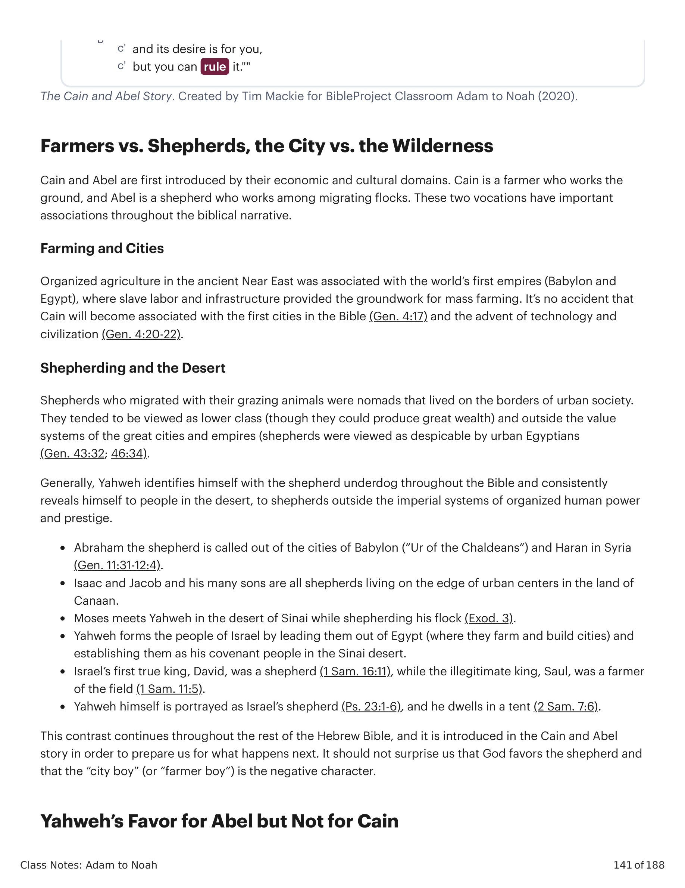

Caim e Abel são primeiramente introduzidos por seus domínios econômicos e culturais. Caim é um agricultor que trabalha o solo, e Abel é um pastor que trabalha entre rebanhos migrantes. Estas duas vocações têm associações importantes por toda a narrativa bíblica. Agricultura e Cidades: A agricultura organizada no antigo Oriente Próximo estava associada com os primeiros impérios (Babilônia e Egito), onde o trabalho escravo e a infraestrutura proviam a base para a agricultura em massa. Não é por acaso que Caim se tornará associado com as primeiras cidades na Bíblia (Gn 4:17) e o advento da tecnologia e civilização (Gn 4:20-22). Pastoreio e o Deserto: Pastores que migravam com seus animais de pasto eram nômades que viviam nas fronteiras da sociedade urbana. Tendiam a ser vistos como classe baixa (embora pudessem produzir grande riqueza) e fora dos sistemas de valores das grandes cidades e impérios (pastores eram vistos como desprezíveis pelos egípcios urbanos (Gn 43:32; 46:34)). Geralmente, Yahweh se identifica com o pastor underdog por toda a Bíblia e consistentemente se revela às pessoas no deserto, aos pastores fora dos sistemas imperiais de poder e prestígio organizados humanos. Abraão, o pastor, é chamado para fora das cidades da Babilônia ("Ur dos Caldeus") e Harã na Síria (Gn 11:31-12:4). Isaque e Jacó e seus muitos filhos são todos pastores vivendo na borda de centros urbanos na terra de Canaã. Moisés encontra Yahweh no deserto do Sinai enquanto pastoreava seu rebanho (Êx 3). Yahweh forma o povo de Israel liderando-os para fora do Egito (onde eles agricultam e constroem cidades) e estabelecendo-os como seu povo da aliança no deserto do Sinai. O primeiro verdadeiro rei de Israel, Davi, foi um pastor (1 Sm 16:11), enquanto o rei ilegítimo, Saul, foi um lavrador do campo (1 Sm 11:5). O próprio Yahweh é retratado como o pastor de Israel (Sl 23:1-6), e ele habita em uma tenda (2 Sm 7:6). Este contraste continua por todo o resto da Bíblia Hebraica, e é introduzido na história de Caim e Abel a fim de nos preparar para o que acontece a seguir. Não deveria nos surpreender que Deus favoreça o pastor e que o "menino da cidade" (ou "menino agricultor") seja o personagem negativo.Cain and Abel are first introduced by their economic and cultural domains. Cain is a farmer who works the ground, and Abel is a shepherd who works among migrating flocks. These two vocations have important associations throughout the biblical narrative. Farming and Cities: Organized agriculture in the ancient Near East was associated with the world's first empires (Babylon and Egypt), where slave labor and infrastructure provided the groundwork for mass farming. It's no accident that Cain will become associated with the first cities in the Bible (Gen. 4:17) and the advent of technology and civilization (Gen. 4:20-22). Shepherding and the Desert: Shepherds who migrated with their grazing animals were nomads that lived on the borders of urban society. They tended to be viewed as lower class (though they could produce great wealth) and outside the value systems of the great cities and empires (shepherds were viewed as despicable by urban Egyptians (Gen. 43:32; 46:34). Generally, Yahweh identifies himself with the shepherd underdog throughout the Bible and consistently reveals himself to people in the desert, to shepherds outside the imperial systems of organized human power and prestige. Abraham the shepherd is called out of the cities of Babylon ("Ur of the Chaldeans") and Haran in Syria (Gen. 11:31-12:4). Isaac and Jacob and his many sons are all shepherds living on the edge of urban centers in the land of Canaan. Moses meets Yahweh in the desert of Sinai while shepherding his flock (Exod. 3). Yahweh forms the people of Israel by leading them out of Egypt (where they farm and build cities) and establishing them as his covenant people in the Sinai desert. Israel's first true king, David, was a shepherd (1 Sam. 16:11), while the illegitimate king, Saul, was a farmer of the field (1 Sam. 11:5). Yahweh himself is portrayed as Israel's shepherd (Ps. 23:1-6), and he dwells in a tent (2 Sam. 7:6). This contrast continues throughout the rest of the Hebrew Bible, and it is introduced in the Cain and Abel story in order to prepare us for what happens next. It should not surprise us that God favors the shepherd and that the "city boy" (or "farmer boy") is the negative character.

Caim traz "o fruto do solo." Caim é, como Adão seu pai, um lavrador do solo, que foi amaldiçoado. A oferta de Caim, embora legítima, é um feixe indiferenciado de vegetais e grãos. A oferta de Abel é "dos primogênitos do rebanho, e das suas porções de gordura." Observe o detalhe extra dedicado à descrição da oferta de Abel, que destaca duas camadas de valor: (1) os primogênitos do rebanho (o maior valor simbólico), e (2) as porções de gordura (as porções mais saborosas e nutritivas). A narrativa implica um contraste direto aqui entre os legumes em feixe de Caim e a oferta animal cuidadosamente selecionada e valiosa de Abel. "Ao dar os primeiros-nascidos e o melhor do animal (i.e. a gordura), Abel seria entendido como tendo dado tudo a Deus."The narrative is very spare, but it's precise in directing the reader's attention that what we're supposed to notice in the Cain and Abel narrative. The Nature of the Offerings: Cain brings "the fruit of the ground." Cain is, like Adam his father, a tiller of the ground, which has been cursed. Cain's offering, while legitimate, is an undifferentiated vegetable and grain bundle. Abel's offering is "from the firstborn of the flock, and from the fat portions." Notice the extra detail devoted to the description of Abel's offering, which highlights two layers of value: (1) the firstborn of the flock (the greatest symbolic value), and (2) the fat portions (the tastiest and most nutritious portions). The narrative implies a direct contrast here between Cain's bundled veggies and Abel's carefully selected and valuable animal offering. "By giving the first-born and the best of the animal (i.e. the fat), Abel would be understood as having given everything to God."
Hess, Richard (1992). "Abel." O Dicionário da Bíblia Anchor Yale, A-C, Vol. 1. Yale University Press.Hess, Richard (1992). "Abel." The Anchor Yale Bible Dictionary, A-C, Vol. 1. Yale University Press.
Embora ambas as ofertas sejam legítimas (ofertas de grãos e de animais são ambas descritas nas regras de sacrifício de Levítico 1-7), o valor extravagante atribuído à oferta de Abel faz a dádiva de Caim empalidecer em comparação. Mas a falha não está simplesmente nos ingredientes da oferta mas no que eles indicavam sobre o caráter de quem a oferecia. Deus Não "Rejeita" Caim: O favor de Deus sobre Abel não constitui uma rejeição de Caim, embora ele pareça experimentá-lo como tal. Deus imediatamente alcança Caim, continua um longo diálogo com ele, e diz a ele que este momento não é permanente. Deus diz a Caim o caminho para o favor: "faze o que é bom." A implicação é que Deus pode discernir, de algum modo, na oferta de Caim que nem tudo está bem em seu coração, mente e caráter. Assim ele trabalha com Caim e o convida a fazer a coisa certa para experimentar o favor divino. "A questão em Gênesis 4 é uma de ética, não de ingrediente sacrificial ... Não obstante, existe uma possibilidade de que um valor ético comparativo seja refletido na qualidade dos sacrifícios oferecidos ... Com os mesmos ingredientes, os papéis humanos poderiam ter sido invertidos ... Caim teria selecionado o melhor do que a terra pode oferecer, e Abel teria matado um animal escolhido timidamente do rebanho ... A ênfase não está no ingrediente dos sacrifícios mas na disposição de quem oferece."While both offerings are legitimate (grain and animal offerings are both described in the sacrificial rules of Leviticus 1-7), the lavish value ascribed to Abel's offering makes Cain's gift pale in comparison. But the fault isn't simply in the ingredients of the offering but what they indicated about the character of the one offering. God Does Not "Reject" Cain: God's favor on Abel does not constitute a rejection of Cain, though he seems to experience it as such. God immediately reaches out to Cain, continues a long dialogue with him, and tells him that this moment is not permanent. God tells Cain the way to favor: "do what is good." The implication is that God can discern, somehow, in Cain's offering that all is not well in his heart, mind, and character. So he works with Cain and invites him to do the right thing to experience divine favor. "The issue in Genesis 4 is one of ethics, not of sacrificial ingredient ... Nonetheless, there exists a possibility that a comparative ethical value is reflected in the quality of the sacrifices offered ... With the same ingredients, the human roles could have been reversed ... Cain would have selected the best of what the earth can offer, and Abel would killed an animal picked gingerly from the heard ... The emphasis is not on the ingredient of the sacrifices but on the disposition of the one offering."
LaCocque, Andre (2008). Investida Contra a Inocência: Caim, Abel e o Yahwista. Cascade Books.LaCocque, Andre (2008). Onslaught Against Innocence: Cain, Abel, and the Yahwist. Cascade Books.
A história de nascimento de Caim chama a atenção para ele como o primogênito. Sua mãe se vangloria de sua habilidade de "criar" um homem, e este homem segue para tomar o lugar de Adão como um "trabalhador do solo." Caim também é o primeiro a trazer uma oferta, como o patriarca ou macho primogênito sempre faz como seu prerrogativa. O primogênito deveria ser reconhecido como aquele que recebia a maior parte da herança (Dt 21:17) como o representante do pai (Gn 49:3). Em Gênesis, o chefe masculino da família oferece sacrifícios (Noé em 8:20; Abraão em 12:4-10) e transmite a bênção e o direito do primogênito (Gn 27). Em Gênesis 4:3, somos primeiro informados que Caim trouxe sua oferta. Então, de repente, somos informados, "E Abel, ele também trouxe dos primogênitos de seus rebanhos ..." Se a oferta de Abel não é um esforço de usurpação de seu irmão mais velho (e bem pode não ser), o narrador está ao menos nos mostrando que o primogênito está sendo superado por seu irmão mais novo. E para coroar tudo, Yahweh favorece Abel! Isto inicia um tema principal no livro de Gênesis: que Deus leva adiante suas promessas de maneiras que subvertem e desafiam a sabedoria tradicional nas sociedades humanas, e ele ama elevar o underdog e o desfavorecido.Cain's birth story draws attention to him as the firstborn. His mother boasts of her ability to "create" a man, and this man goes on to take the place of Adam as a "worker of the ground." Cain is also the first to bring an offering, as the patriarch or firstborn male always does as their prerogative. The firstborn was to be acknowledged as the one who received the greater share of the inheritance (Deut. 21:17) as the father's representative (Gen. 49:3). In Genesis, the male head of the family offers sacrifices (Noah in 8:20; Abraham in 12:4-10) and passes on the blessing and right of the first-born (Gen. 27). In Genesis 4:3, we're told first that Cain brought his offering. Then, all of a sudden, we're told, "And Abel, he also brought from the firstborn of his flocks ..." If Abel's offering is not an effort at usurpation of his elder brother (and it may well be), the narrator is at least showing us that the first-born is being shown up by his younger brother. And to top it all off, Yahweh favors Abel! This begins a major theme in the book of Genesis: that God carries forward his promises in ways that subvert and challenge traditional wisdom in human societies, and he loves to elevate the underdog and the disadvantaged.
Caim e Abel são introduzidos em uma narrativa sobre adoração enquanto fazem suas ofertas perante Yahweh. Mas onde esta história está acontecendo? Gênesis 3:22-24 nos diz que os humanos foram enviados para fora do jardim do Éden "para o leste" e que naquela fronteira leste do Éden, Yahweh postou querubins e uma espada. Quando Caim é exilado após assassinar seu irmão em Gênesis 4:16, somos informados que ele foi "a leste do Éden." Isto significa que Gênesis 4:1-16 está acontecendo dentro do Éden, perto da borda leste do jardim. Há numerosas pistas nesta narrativa e em padrões de design posteriores sobre o tabernáculo e o templo que apontam para visionar esta oferta como acontecendo à "porta" do jardim do Éden, que é mencionada em Gênesis 4:7. A "porta" de Gênesis 4:7 é frequentemente tomada para se referir metaforicamente à porta do coração ou mente de Caim, onde o ímpeto pecaminoso o aguarda. Mas isto não é o que o texto hebraico diz. Gênesis 4:7 consiste de três palavras em hebraico: "à porta" (לפתח), pecado (חטאת) é um agachador (רבץ). A metafórica "porta do coração" não é usada em nenhum outro lugar na Bíblia Hebraica, ao passo que o contexto narrativo nos provê uma explicação perfeitamente plausível. Caim e Abel são retratados como oferecendo seus sacrifícios à porta do jardim do Éden, em frente aos querubins e à entrada no lugar santo da presença celestial de Deus na Terra. A tentação pecaminosa, semelhante a animal, de se rebelar contra Deus saiu do jardim com eles e agora está "à porta" ao lado deles. Com esta leitura, o tabernáculo e o templo posteriores espelham esta cena precisa, pois o altar era colocado diretamente a leste em frente à "porta" (פתח) para o espaço sagrado, onde ofertas eram feitas antes que os sacerdotes pudessem entrar no espaço sagrado.Cain and Abel are introduced in a narrative about worship as they make their offerings before Yahweh. But where is this story taking place? Genesis 3:22-24 tells us that the humans were sent out from the garden of Eden "to the east" and that on that eastern border of Eden, Yahweh stationed cherubim and a sword. When Cain is exiled after murdering his brother in Genesis 4:16, we're told he went "east of Eden." This means that Genesis 4:1-16 is taking place within Eden, near the eastern edge of the garden. There are numerous clues in this narrative and in later design patterns about the tabernacle and temple that point to envisioning this offering as taking place at the "door" of the garden of Eden, which is mentioned in Genesis 4:7. The "door" of Genesis 4:7 is often taken to metaphorically refer to the door of Cain's heart or mind, where the sinful urge is waiting for him. But this is not what the Hebrew text says. Genesis 4:7 consists of three words in Hebrew: "at the door" (לפתח), sin (חטאת) is a croucher (רבץ). The metaphorical "door of the heart" is used nowhere else in the Hebrew Bible, whereas the narrative context provides us with a perfectly plausible explanation. Cain and Abel are depicted as offering their sacrifices at the door of the garden of Eden, in front of the cherubim and the entrance into the holy place of God's heavenly presence on Earth. The sinful, animal-like temptation to rebel against God has exited the garden with them and is now "at the door" alongside them. With this reading, the later tabernacle and temple mirror this precise scene, as the altar was placed directly east in front of the "door" (פתח) to the sacred space, where offerings were made before the priests could enter into sacred space.
Recomendação de Recurso: Para mais sobre o tópico de sacrifícios à porta do Éden, veja Azevedo, J (1999). "À Porta do Paraíso: Uma Interpretação Contextual de Gênesis 4:7." Biblische Notizen, vol. 100.Resource Recommendation: For more on topic of sacrifices at the door of Eden, see Azevedo, J (1999). "At the Door of Paradise: A Contextual Interpretation of Genesis 4:7." Biblische Notizen, vol. 100.
Há algo errado com a oferta de Caim? Caim foi rejeitado por Deus?Is there something wrong with Cain's offering? Was Cain rejected by God?